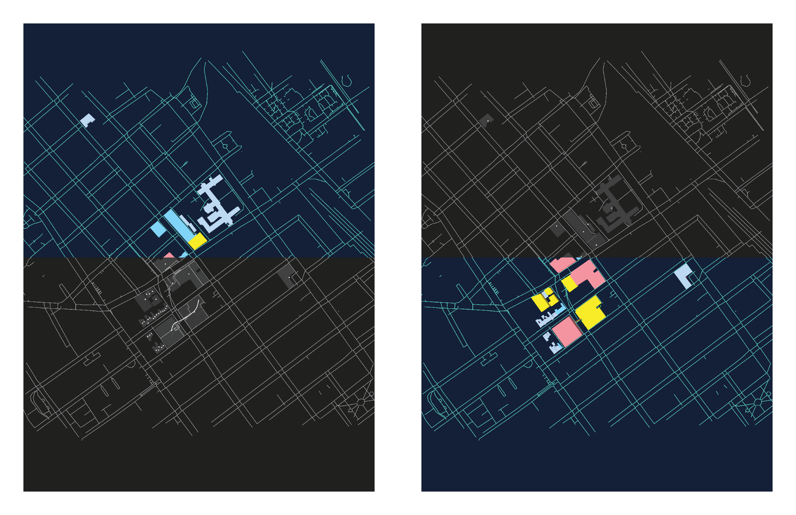
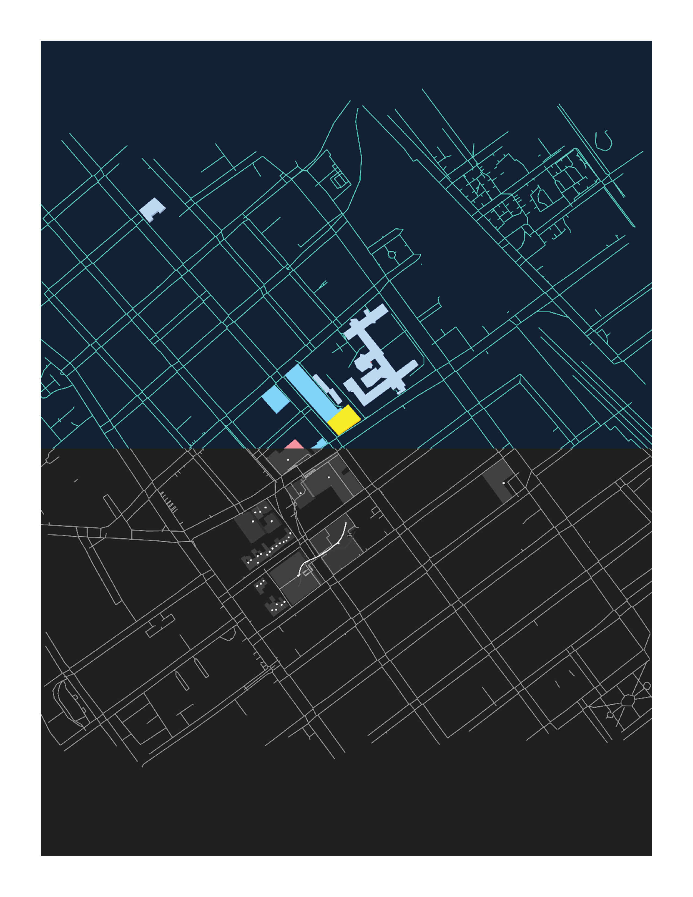

Tactile Accessibility Maps
A custom print pipeline mapping accessible routes through Concordia's SGW campus
Concept
Tactile Accessibility Maps is a synthesis project that builds a browser-based pipeline for generating tactile campus maps—combining graphic design, web development, and 3D printing into a single workflow. Inspired by a real WSP accessibility study of Concordia's SGW campus, the project asks: what does it mean to make a map not just readable, but physically feelable?
Context
The project began with a WSP report on mobility and universal accessibility through the Concordia passage connecting Pavillons LB and H—two buildings joined by an underground metro-level corridor. The report identified two route types: an active path for able-bodied users and a reduced-mobility path for universal accessibility. These routes had never been visualized in three dimensions or prepared for tactile output.
Rather than working in a conventional design tool, I built the entire pipeline from scratch in JavaScript—from raw OpenStreetMap data to an interactive 3D preview to a print-ready STL file for CNC embossing.

Two color variants of the SGW campus tactile map, printed on dark stock. Left: full color build. Right: route-emphasis variant.
Pipeline
The system runs as a 6-stage browser pipeline. Stage 1 loads OpenStreetMap GeoJSON of the SGW campus. Stage 2 filters features into typed layers—buildings, pedestrian paths, entrances, and accessibility routes. Stage 3 applies Douglas-Peucker simplification to reduce vertex count while preserving tactile legibility. Stage 4 attaches tactile specifications per the ProBlind Standard v4: stroke widths, dash patterns, and relief heights measured in millimetres. Stage 5 renders a 2D SVG at A4 scale for print review. Stage 6 exports a watertight binary STL where every feature is extruded to a physical height—buildings at 2mm, paths at 1mm, and the WSP routes at 1.5mm so they're haptically distinct.
The WSP accessibility routes were manually traced from the floor plan PDF and encoded as GeoJSON LineStrings—the active route rendered in pure red, the accessible route in pure green, using unlit materials so the colors survive Photoshop's Black & White channel separation cleanly.
Key Features
WSP Route Overlay
Real accessibility routes from a Concordia commission study are threaded through the pipeline as a distinct layer, rendered wider and taller than standard paths for haptic distinction
3D Print Ready
Every output is a watertight binary STL with tactile heights following ProBlind Standard v4—buildings, paths, and routes each at distinct physical relief levels
Grayscale Separation
Routes use unlit materials with fully saturated hues so Photoshop's Black & White adjustment cleanly separates active and accessible routes into distinct tonal values
Interactive 3D Preview
A Three.js viewer with orbit controls, preset camera angles, ghost-mode building opacity, and high-res PNG export at up to A3 300dpi resolution

Color-to-grayscale treatment showing how accessibility route colors separate across print modes. Top: dark ground / grayscale. Bottom: navy ground / full color.
Technical Stack
Impact & Reflection
The project forced a question that graphic design rarely asks: what does a map feel like? Tactile cartography has a long history in accessibility design, but it's rarely approached as a creative medium. By building the pipeline rather than using existing tools, every design decision—stroke width, relief height, dash interval—became a deliberate choice with physical consequences.
The WSP routes added a layer I hadn't anticipated: the gap between an accessible path on paper and the actual experience of navigating it. The green route on the map is longer, less direct, and more complex than the red one. That asymmetry is the real subject of the work.